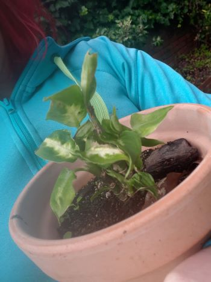

There once was a child called HTML who worked at an information desk and while they were good at giving information people often found them very plain and boring and if they had to give a lot of information it could be hard to follow the flow. It became harder and harder for them to give information as the workplace got bigger and more complicated, eventually they were at their wits end at people missing crucial information because they overwhelmed them with stuff. So HTML went and had a chat to their supervisor and the supervisor noticed how much busier they were and hired a helper for HTML. CSS was lovely but knew nothing about the business and it seemed to HTML they never would, however the lovely and pretty nature of CSS drew people to them and they often had to ask HTML for the information so they could pass it along to people in a way that was visually appealing for the client. CSS and HTML grew old together in their workplace relying on each other to get their information across in a way people would appreciate and enjoy.
Writing that story! But I always have a moment of happiness when I center something, I really struggled with it to start with! I also was very happy to already have a colour scheme in mind before anything else, it's the little things.
I've been watching avatar the last air bender and i think that HTML would be a lion turtle and CSS a turtle duck! HTML because the lion turtle is old and has watched many things change while its been around and people forget that it's a thing. And turtle ducks are pretty and CSS is pretty so that's a very poorly though out statement but turtle ducks. But they both stem from the same place and have a balance with each other.
I have found that my work as a barista was not engaging enough for my mind after many years (plus I like sitting down occasionally!) and I am not able to pursue the event management career I was looking at doing. And it doesn’t seem like a viable option in the immediate future so I am looking for things that engage my mind and allow me some creative freedom at the work place beyond the tip jars!
I would like to become more confident in understanding and communicating my value to an environment. I always seek to learn more information on feedback and mitigating unhealthy situations as I think these are extremely valuable skills. Creating an effective communication statement and understanding what I am looking for and the words that I should use to gain what I want. Hopefully it gets super technical at points but I’d also like to look at the broader use of communication statements.
I hope to talk to people more about my professional work and learn to give and take feedback in an environment that pushes me to learn constantly. Ideally this will mean you’ll see me all over the class discussions and forums talking and just fostering a better knowledge base.
I am very easily adaptable and quick to learn. I like understanding different approaches to the same problem and enjoy the problem solving process more than the solution unless there is a time restraint. That’s when I tend to hyper focus on creating the best possible outcome given the restraints of the situation. On the flipside I am easily distractible (my work so far has really driven that point home for me), sometimes things take time to sink in and often overbook my time. Though I am hoping this course will, and so far it’s holding true, make me more aware of my time and value it in a way that is productive to my growth as a person.
Keeping and setting toggl goals that give me time for feedback and resolution before deadlines has been helping a lot, though I know I still have room for improvement here so I’ll keep at it!
In terms of free time I have to dedicate to this course, if I keep my time management skills to their goals, I sleep at night and they tell me I need to eat three times a day so I guess I’m busy then because eating over a computer ALWAYS results in stray crumbs under a key. It's just how I am.
Well hopefully I’ll talk to you all soon and we can all learn from each other. :)